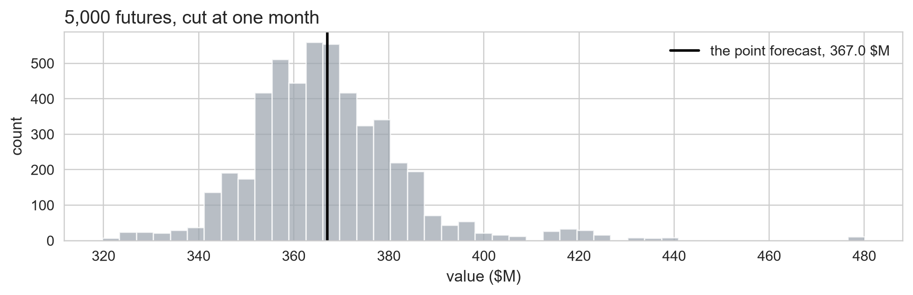
A Statistics Refresher
Read before Day 1, or in an expansion hour
2026-10-13
Five ideas this deck builds
Distributionshape, centre, width Quantilea cut in a sorted list i.i.d.fails two ways Testone number p-valuehow rare is rare?
This deck is read alone, and it assumes nothing about forecasting. Every picture on it is a measured human height, because a height needs no explaining.
A. Randomness has a shape
The random variable, the distribution, and the two numbers that summarize it
Before it is measured, a height is a random variable
\(Y\): the height of the next man you measure: not yet known
\(y\): the same height, once measured: a number
A random variable is the whole set of values \(Y\) could take, before it is seen. Statistics is the study of that set.
Every picture here is drawn on the same 799 heights
Before it is anything else it is a list of 799 numbers, and every idea in this deck is a question asked of it.
NHANES I Epidemiologic Follow-up Study · where these numbers come from
A distribution is the shape of the data
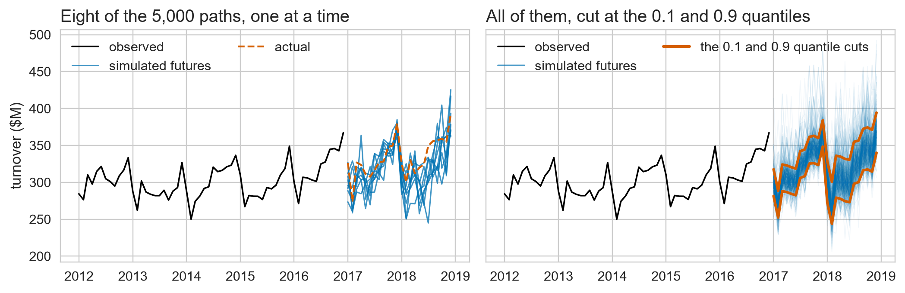
A distribution is the full set of plausible values and how often each occurs. Its picture is a histogram; the mean is one number inside it.
The mean is the centre, the SD is the width
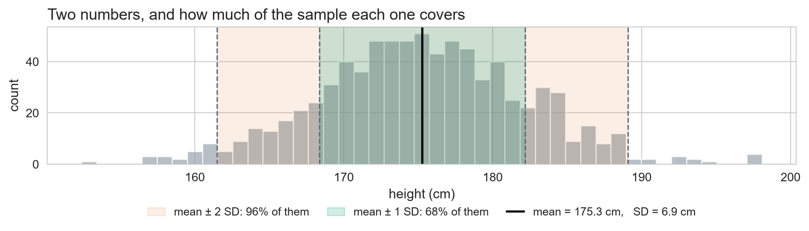
\[\bar{y} = \frac{1}{n}\sum_{i=1}^{n} y_i\]
\[s = \sqrt{\frac{1}{n-1}\sum_{i=1}^{n}(y_i - \bar{y})^2}\]
\(\bar{y}\) is 175.3 cm — the centre. \(s\) is 6.9 cm — the typical distance from it. \(s^2\) is the variance: that width squared.
The bell curve
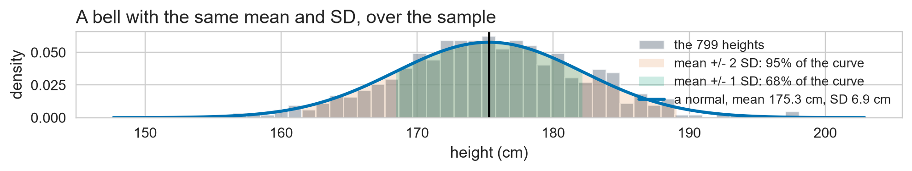
\[Y \sim N(\mu,\ \sigma^2)\]
- A bell puts 68% of its values inside one SD, and 95% inside two
- These men put 68% and 96% there: close, and measured
A probability is a share of all possible values
\(P(\text{something})\) is the share of all possible values where that something is true, a number between 0 and 1.
| Notation | In words | |
|---|---|---|
| \(P(Y \le 180)\) | the next man measures 180 cm or less | 0.76 |
| \(P(Y > 180)\) | he measures more | 0.24 |
| \(P(\lvert Y - \bar{y} \rvert \le s)\) | he lands within one SD of the centre | 0.68 |
Capital \(Y\) is doing the work it was introduced for: a probability is a question about the value before it is measured.
B. Cutting a distribution
The median, the quantile, and what an 80% range is
The median is the cut that leaves half on each side
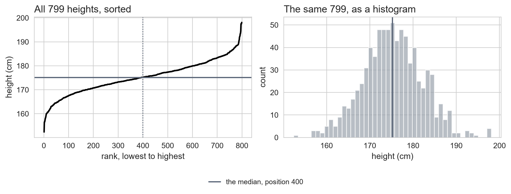
The median is a position in a sorted list, not a formula. Sort the 799 heights: the median is number 400, at 175 cm — half below, half above.
A quantile is the same cut, with a knob
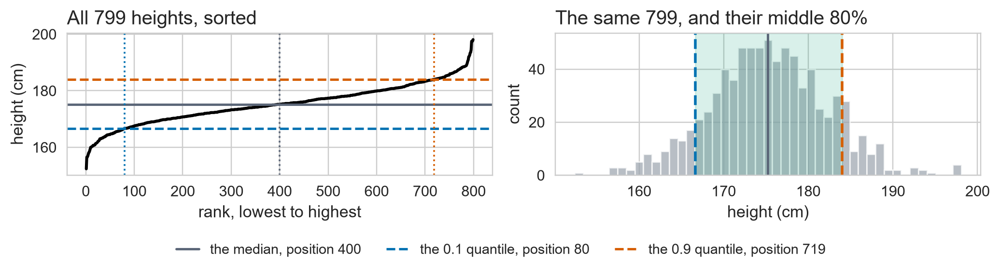
- The \(0.5\) quantile is the median: position 400 of 799
- The \(0.9\) quantile is position 719, the height 184 cm
- The \(0.1\) quantile is position 80, the height 167 cm
Drag the knob
50%
quantile
position 400 of 799
height 175 cm
the knob
10% → 167 cm · 50% (the median) → 175 cm · 90% → 184 cm
the middle 80% runs from 167 to 184 cm
the middle 80% runs from 167 to 184 cm
An 80% range is a pair of cuts
An 80% range leaves 10% in each tail, so its ends are the \(0.1\) and \(0.9\) quantiles: 167 cm and 184 cm here. A 95% range leaves 2.5% in each tail, so its ends are the \(0.025\) and \(0.975\) quantiles, 161 cm and 188 cm. Same rule, different knob.
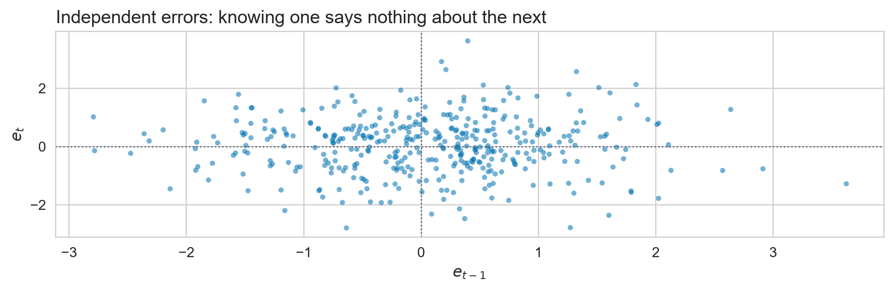
Every interval the course later puts around a forecast is a pair of cuts like these — and on a skewed sample the two cuts are not symmetric around the mean.
A cut describes one sample
A distribution tells you the shape of one sample. It does not tell you whether the next value comes from that same shape, or whether the sample was collected in a way that lets you ask. That assumption has a name.
C. i.i.d.
Independent, then identically distributed, then each one breaking on this survey
i.i.d. is two claims
Independent
Each value tells you nothing about the other ones.
Identically distributed
Every value in the sample comes from the same distribution.
They are separate claims, and each breaks its own way: one careless survey breaks the first, a different careless survey breaks the second.
Independent means one says nothing about the other
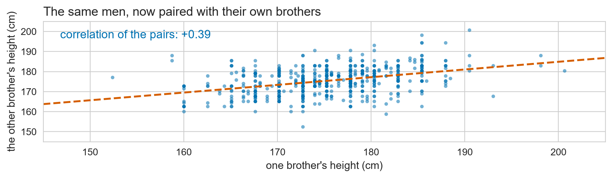
605 pairs of men from different families. If the two are independent the cloud has no tilt, and the correlation sits at -0.02 on a scale from \(-1\) to \(+1\).
Now pair each man with his own brother instead. What happens to the cloud?
Pair each man with his own brother instead

- The same 605 pairs, now correlating at +0.39
- Read one brother’s height and you can guess the other’s
Independence fails when one value carries information about another. Same men, same histogram, different pairing.
Galton (1886), 934 children in 205 families · where these numbers come from
Identically distributed means one shape throughout
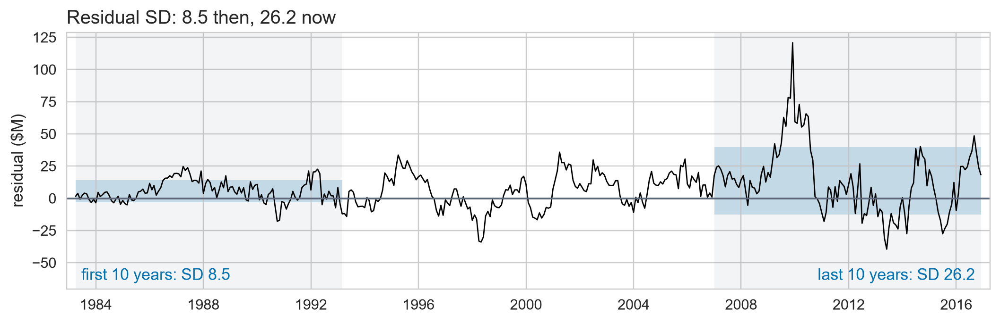
Both halves sit at the same level with the same spread, so one distribution stands for all of them — and the histogram has one hump.
Now split the survey by something that is not arbitrary.
One survey, two populations
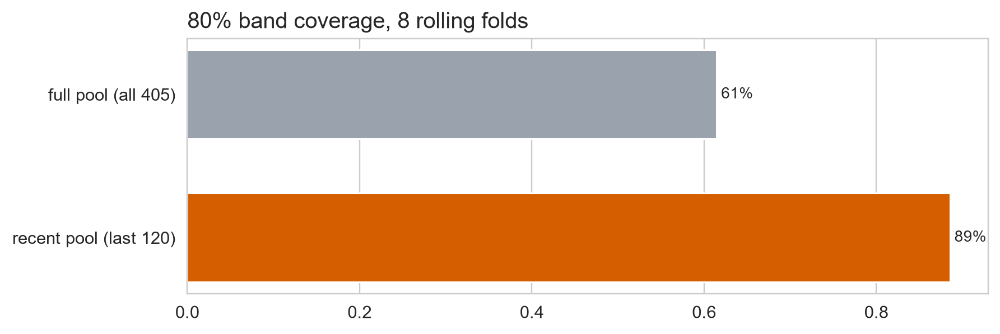
The same survey also measured 830 women. Two overlapping populations, and a pooled SD of 9.1 cm against 6.9 and 5.8 inside the groups.
Identical distribution fails when one sample holds two populations. Its pooled 80% range, 157 to 181 cm, is right for nobody.
D. Testing a claim
From one person’s slice membership to a measure of disagreement and a decision
Judge a departure against sampling noise
A sample differs from its population, even when the population obeys our claim. A difference alone cannot settle the question.
We want a rule that detects departures, while rarely rejecting a claim that is true. To build it, we first need to know what that claim predicts.
A precise claim gives us a world to reason under
Suppose independently sampled heights come from a bell with centre 175 cm and SD 7 cm.
\(H_0\): the null hypothesis
The population follows this specified bell.
\(H_1\): the alternative hypothesis
The population does not follow this bell.
Assume \(H_0\) temporarily. What would repeated samples look like if it were true? That assumption lets us calculate sampling noise.
Population parameters stay fixed; sample statistics change
| Quantity | Population parameter | Sample statistic |
|---|---|---|
| Centre | \(\mu\) = 175 cm | \(\bar y\) = 175.3 cm |
| Width | \(\sigma\) = 7 cm | \(s\) = 6.9 cm |
The parameters in \(H_0\) stay fixed. A new sample gives new statistics.
A hat marks an estimate: \(\hat\sigma\) estimates the population’s \(\sigma\). Here we check the claimed bell rather than fitting a new one to the sample.
The bell predicts probabilities for slices
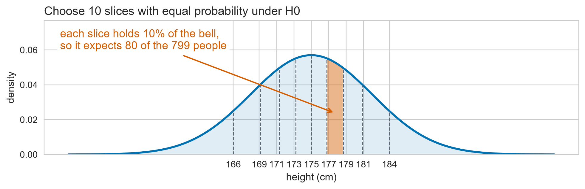
Use the claimed bell’s quantiles to make 10 slices. Under \(H_0\), a person lands in each slice with probability \(\pi=1/k=0.1\).
The probabilities are equal; the slice widths are not.
For one person, slice membership is a zero or a one
For a fixed slice, write \(I=1\) if the person lands inside it, and \(I=0\) otherwise.
| Membership \(I\) | Probability under \(H_0\) |
|---|---|
| \(1\): inside | \(\pi\) |
| \(0\): outside | \(1-\pi\) |
\[\mathbb E[I]=1\cdot\pi+0\cdot(1-\pi)=\pi\]
\(\mathbb E\) means average over repeated draws. Summing memberships across \(n\) people gives the count \(O=I_1+\cdots+I_n\), so \(\mathbb E[O]=n\pi\).
The same zero-or-one variable gives its variance
Because \(I\) is either zero or one, \(I^2=I\), so \(\mathbb E[I^2]=\pi\) too.
\[\operatorname{Var}(I)=\mathbb E[I^2]-\mathbb E[I]^2 =\pi-\pi^2=\pi(1-\pi)\]
Variances add across independent people. Therefore
\[E=n\pi,\qquad \operatorname{Var}(O)=n\pi(1-\pi)=E(1-\pi)\]
Here \(E=79.9\) and \(\operatorname{SD}(O)=\sqrt{79.9\times0.9}\approx8.5\) people. That is the count’s ordinary sampling noise under \(H_0\).
Judge a count gap against its sampling noise
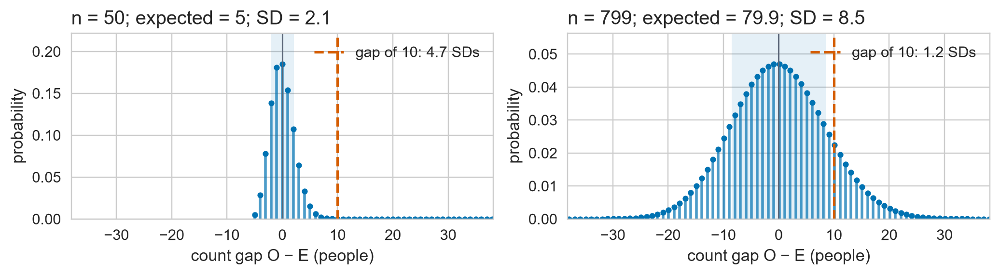
A gap of about ten people is almost five SDs for 50 people, but only about one SD for 799. Raw gaps are not on a common noise scale.
For one slice, measure disagreement in SDs: \(\displaystyle\frac{O-E}{\sqrt{E(1-\pi)}}\).
The ten gaps are linked by the fixed total
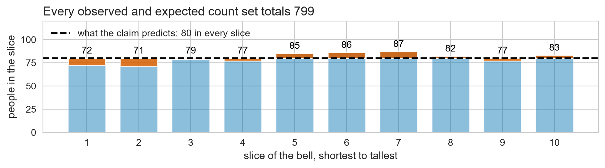
Write \(d_i=O_i-E\). Both sets of counts total \(n\), so
\[d_1+\cdots+d_k=0\]
Only nine gaps can vary freely. Simply adding all ten always gives zero, even when the claimed shape is wrong.
Compare two slices to isolate one fluctuation
Score each person by whether they enter slice 1 or slice 2.
| Person lands in | Score \(J\) | Probability |
|---|---|---|
| Slice 1 | \(+1\) | \(\pi\) |
| Slice 2 | \(-1\) | \(\pi\) |
| Any other slice | \(0\) | \(1-2\pi\) |
\[\mathbb E[J]=\pi-\pi=0,\qquad \operatorname{Var}(J)=\pi+\pi=2\pi\]
Summing scores gives \(O_1-O_2\). Independent people give \(\operatorname{Var}(O_1-O_2)=2n\pi=2E\).
A balanced comparison has a natural noise scale
Normalize the two-slice difference:
\[C_1=\frac{O_1-O_2}{\sqrt2} \quad\Longrightarrow\quad \mathbb E[C_1]=0,\quad \operatorname{Var}(C_1)=E\]
Now express it in its own SDs:
\[Z_1=\frac{C_1}{\sqrt E} =\frac{O_1-O_2}{\sqrt{2E}},\qquad \mathbb E[Z_1]=0,\quad\operatorname{Var}(Z_1)=1\]
This is where \(\sqrt E\) comes from: the noise scale of a normalized, balanced comparison of counts.
Nine distinct comparisons capture all ten gaps
The first comparison is slice 1 against slice 2. The next compares those two together against slice 3:
\[C_1=\frac{d_1-d_2}{\sqrt2},\qquad C_2=\frac{d_1+d_2-2d_3}{\sqrt6}\]
Continue up to slice 10. Each comparison has mean zero and variance \(E\). Their nine perpendicular directions capture every gap.
\[d_1^2+\cdots+d_{10}^2=C_1^2+\cdots+C_9^2\]
This is Pythagoras: the total squared distance is unchanged when we change perpendicular axes.
Square the standardized comparisons and add
Use a squared distance so both signs of departure contribute. Each comparison has \(Z_j=C_j/\sqrt E\).
\[Q=\sum_{j=1}^{9}Z_j^2 =\frac{\sum_{j=1}^{9}C_j^2}{E} =\sum_{i=1}^{10}\frac{(O_i-E)^2}{E}\]
This is Pearson’s test statistic. The denominator comes from the comparisons’ variance; the sum comes from pooling their squared distances. For these men, \(Q_{\text{obs}} =\) 3.6.
Since each \(Z_j\) has mean zero and variance one, \(\mathbb E[Q\mid H_0]=9\), even before any normal approximation.
Squared normal comparisons give a chi-squared law
Each comparison sums many independent person scores. With large expected counts, the perpendicular comparisons are approximately normal and independent.
\[Z_1,\ldots,Z_9\ \approx\ \text{independent }N(0,1)\]
A chi-squared distribution is the distribution of a sum of squared, independent standard normal variables. Therefore
\[Q=Z_1^2+\cdots+Z_9^2\ \overset{\text{approx}}{\sim}\ \chi^2_9\]
Nine degrees of freedom: nine free comparisons, rather than ten independent counts.
Simulation checks the reference we have derived
Generate 799 independent heights under \(H_0\), count their slices, and compute \(Q\). Repeat 5,000 times.
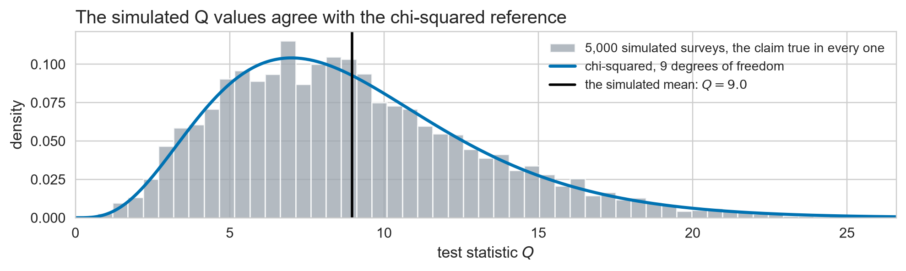
The null distribution is the spread of \(Q\) when \(H_0\) is true. Its simulated mean is 9.0, against the derived mean of 9.
A decision rule needs a boundary
Choose a boundary \(c\), the critical value. It separates two possible decisions:
\(Q<c\): fail to reject \(H_0\)
The disagreement is not large enough to reject the claim.
\(Q\ge c\): reject \(H_0\)
The disagreement is large enough to count as evidence against the claim.
\[R=\{Q:Q\ge c\}\qquad\text{the rejection region}\]
Large \(Q\) contradicts this claim, so \(R\) is in the right tail. How should we choose \(c\)?
Choose the false-alarm rate before the decision
Even when \(H_0\) is true, a random sample can land in \(R\). Rejecting a true null is a Type I error, or false alarm.
\[\alpha=P(Q\in R\mid H_0)=P(Q\ge c\mid H_0)\]
Choose \(\alpha=0.05\): a rule designed to reject about 5 in 100 samples when \(H_0\) is true. This chosen risk is the significance level.
Read \(\mid H_0\) as assuming the claim is true. This is a rate across repeated samples, not the probability that our current decision is wrong.
The 95th percentile leaves 5% for false alarms
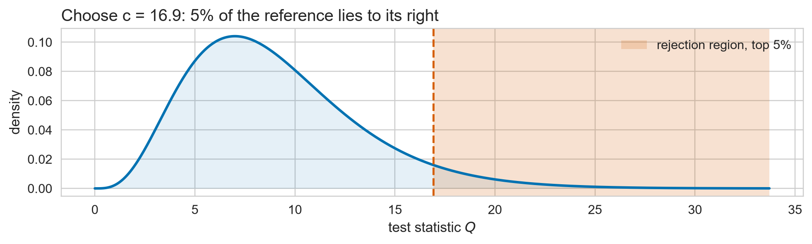
\[c=F^{-1}_{\chi^2_9}(0.95)\approx16.9\]
Our rule: reject \(H_0\) if \(Q\ge\) 16.9. In the simulated surveys, 4.9% cross this boundary.
The men’s statistic does not cross the boundary
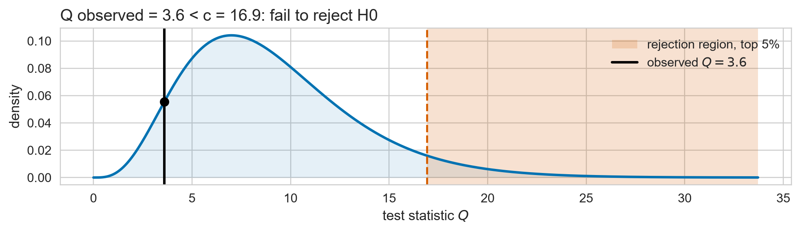
\(Q_{\text{obs}} =\) 3.6 \(<\) 16.9. Fail to reject \(H_0\) at the 5% significance level. These data do not provide enough evidence against the specified bell.
Failing to reject does not prove the claim. A false claim can also produce a sample that stays below the boundary.
The same rule rejects the pooled sample
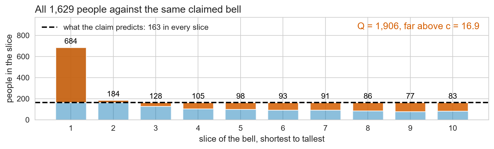
The shortest slice expects 163 people and contains 684. Now \(Q =\) 1,906 \(>\) 16.9: reject \(H_0\).
Adding the women changes the population mix. The same calculation detects the distribution mismatch that segment C showed in pictures.
Try the rule on repeated surveys
Q = …
…
…
…
Move the slider through surveys generated under \(H_0\), then select either real sample. The boundary stays fixed; the sample statistic changes.
E. The p-value
What it is, how to read it off the null, and the misreadings
Replace the fixed boundary with the observed statistic
We used a fixed boundary \(c\) to make a decision. Now ask:
If \(H_0\) were true, how often would \(Q\) be at least as large as \(Q_{\text{obs}}\)?
\[p=P(Q\ge Q_{\text{obs}}\mid H_0)\]
This probability is the p-value. It is a tail area beyond the observed statistic, computed assuming the null hypothesis is true.
Count the null surveys beyond the observed statistic
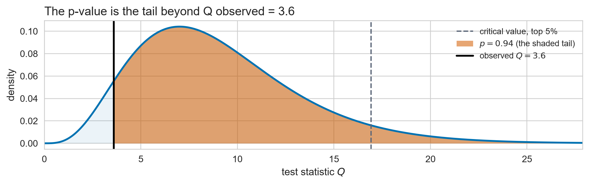
About 93% of the 5,000 simulated surveys have \(Q\ge Q_{\text{obs}}\). That share estimates the p-value. The chi-squared approximation gives \(p =\) 0.94.
The p-value gives the same decision rule
Compare the statistic
\[Q_{\text{obs}}\ge c\]
The observed disagreement reaches the rejection region.
Compare the tail area
\[p\le\alpha\]
The tail beyond the observation is no larger than the allowed false-alarm area.
\[\text{Reject }H_0\quad\Longleftrightarrow\quad p\le\alpha\]
For the men, \(p =\) 0.94 \(>0.05\): fail to reject \(H_0\), just as the statistic rule did.
p is not the probability that H0 is true
What \(p\) measures
\[P(\text{data this extreme} \mid H_0)\]
A share of the 5,000 null surveys, every one of which obeys the claim.
What people hear
\[P(H_0 \mid \text{data})\]
A verdict on the claim itself. Different question, and answering it needs a prior.
\(p\) also does not tell us the probability that chance caused the result. It measures how extreme the statistic is under an assumed \(H_0\).
A small p means detectable, not large
The claimed centre is 173.5 cm, 1.8 cm below the full sample’s mean. Compare all 799 men with the first 50.
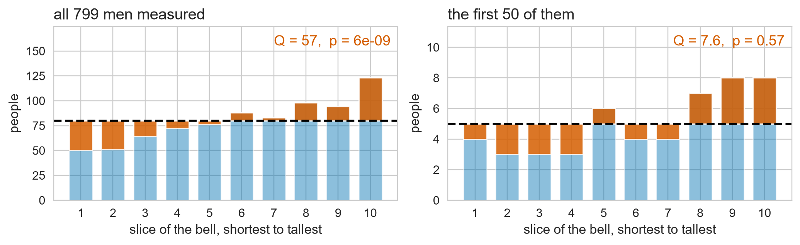
All 799: \(p =\) 6e-09; first 50: \(p =\) 0.57. Judge practical size separately.
A test can make two kinds of error
| Our decision | \(H_0\) is true | A specific alternative is true |
|---|---|---|
| Reject \(H_0\) | Type I error: false alarm | Correct detection |
| Fail to reject \(H_0\) | Correct non-rejection | Type II error: missed detection |
Power is the probability of rejecting \(H_0\) when a particular alternative is true: \(1-\beta\), where \(\beta\) is its missed-detection rate.
More data or a larger departure usually increases power. For a fixed test and sample size, lowering \(\alpha\) reduces false alarms but also reduces power.
A tiny p means unfinished
The pooled survey’s \(Q\) is 1,906, so far into the tail that its \(p\) underflows to zero. That does not make the claim worthless: it means one bell cannot describe two populations, and the test can tell.
Every method in this course leaves something behind, and a test is how you find out whether it is more than luck. A tiny \(p\) means unfinished.
F. Where each idea lands
The pointer table back into decks 2, 3 and 4
Five ideas, and the course slides that need them
| Concept | The course slide that needs it |
|---|---|
| Distribution, mean, SD | \(e_t \sim N(0, \sigma^2)\), and so the Gaussian interval (deck 3) |
| Quantile, percentile | An 80% interval is the \(0.1\) and \(0.9\) quantiles; CRPS integrates a ladder of them (decks 3 and 4) |
| i.i.d. | Pooling 1982 errors with 2018 errors drops bootstrap coverage to 61% (deck 4) |
| Hypothesis testing, and the sampling distribution under it | 24 lag checks by eye become one number (deck 3); the same simulated set is the \(\pm 1.96/\sqrt{T}\) band on an ACF (deck 2) and the standard error of a coverage rate (deck 4) |
| The p-value | \(p \approx 10^{-240}\), so the floor is beatable, so Day 3 exists (deck 3) |
On Day 1 the sample stops being measured heights and becomes the errors a forecast makes. The five checks under Before Day 1 in the Day 1 notebook rehearse these, one per segment.
Where these heights come from
| file | what it is | what the deck does with it |
|---|---|---|
nhefs_heights.csv |
NHANES I Epidemiologic Follow-up Study: 1,629 adults, height measured to a fraction of a centimetre rather than asked | its 799 men are every picture here; its two populations are segment C’s second failure |
galton_children.csv |
Galton (1886): 934 children in 205 families, inches converted to centimetres | segment C’s brother pairs. The one file that records who is related to whom |
Public domain, and committed under coursekit/data/ so the course runs offline. Refresh from Rdatasets: causaldata/nhefs.csv · HistData/GaltonFamilies.csv